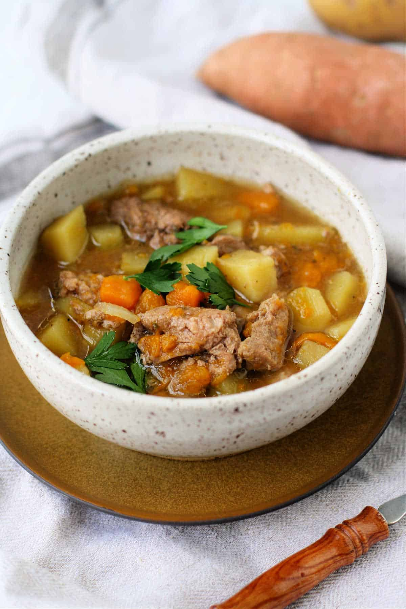

Home
Lamb Soup

Description
We also love a heartier meal, like this slow cooker lamb soup. It’s so flavorful, with chunks of lamb, onion,
celery, sweet potatoes, regular potatoes, and a savory broth
The best part is, the slow cooker does most of the work for you! Chop up your ingredients, then let the slow
cooker simmer this soup all day long so you can enjoy a delicious dinner in the evening.
Ingredients
- 1 cup onion, chopped
- 3 stalks celery, chopped
- 2 pounds lamb stew meat
- 3 cups Yukon Gold potatoes, peeled and chopped
- 2 cups sweet potatoes, peeled and chopped
- 48 ounces chicken broth or beef broth
- 1 teaspoon salt
- ½ teaspoon pepper
- 1 ½ teaspoons oregano
- 1 ½ teaspoons garlic powder
Steps
- Place the ingredients into the slow cooker in the following order: chopped onion and celery, lamb, potatoes,
sweet potatoes, broth, and spices.
- Set the slow cooker to low and cook for 6 hours. You could also set the slow cooker to high and cook for 4
hours.
- Serve with crackers or fresh bread.